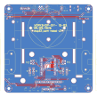

روبوت ESP32-CAM v2 — برنامج ESPHome
| النوع | برنامج روبوت: القيادة والفيديو وصمامات الحالة والشاشة، من صفحة ويب |
|---|---|
| التركيب | ESP32-CAM AI-Thinker ← لوحة التوسعة v3 ← لوحة الروبوت v2 |
| المحرّكات | TB6612FNG على لوحة الروبوت (J1, J3) |
| الأضواء | 4 صمامات RGB طراز TX1812 (الحالة)، و D1 مع صمام الفلاش (المصباح الأمامي) |
| الشاشة | OLED طراز SSD1306 مقاس 0.96 بوصة على لوحة التوسعة |
| البرنامج الثابت | ESPHome 2026.7.3، إطار Arduino، على Linux |
| صفحة الويب | المنفذ 80: أزرار القيادة، منزلقات، السجلّ |
| الفيديو | MJPEG على المنفذ 8080 |
| الإعدادات | esp32_cam_robot.yaml |
| المساعد | launch.sh (قائمة للأطفال) |
| ملفات KiCad | esp32_cam_robot_v2، esp32_cam_plugin_v3 |
| الحالة | الإعدادات صحيحة، لم تُجرَّب على الروبوت بعد |
هذا برنامج الروبوت الذي يأتي بعد التحقق من لوحة التوسعة. منصّة الاختبار أثبتت كل جزء وحده؛ وهذا الملف يجعلها تعمل معًا روبوتًا تقوده من الهاتف.
esphome config على الإصدار 2026.7.3. لم تُترجَم بعد على Linux ولم تُجرَّب على الروبوت؛ ستُحدَّث هذه الصفحة بعد أول قيادة.نظرة عامة
ثلاث لوحات فوق بعضها. تُركَّب ESP32-CAM على لوحة التوسعة (v3)، التي يُركَّب موصلها ذو الأطراف الاثني عشر J4 على J2 في لوحة الروبوت (v2). لوحة الروبوت تجلب مشغّل المحرّكات، وأربعة صمامات RGB، والبطاريات، والمفتاح؛ ولوحة التوسعة تجلب شاشة OLED والصمام D1. مشغّلا L9110 على لوحة التوسعة (U1, U3) غير مركّبين في هذا الروبوت: TB6612 هو مشغّل المحرّكات الوحيد.
مقال لوحة التوسعة يسمّيها «rev v4»: وهي الدارة نفسها منقولة إلى KiCad 9. اللوحة المصنوعة فعلًا هي v3 — الشبكات نفسها والأطراف نفسها.

البرنامج الثابت ملف ESPHome واحد. بعد تحميله ينضمّ الروبوت إلى شبكة Wi-Fi، ويعرض عنوانه على شاشة OLED، ويقدّم صفحة فيها أزرار القيادة ومنزلق السرعة والسجلّ المباشر. الفيديو على المنفذ 8080.
التركيب وتوزيع الأطراف
كل طرف أدناه مأخوذ من قائمة الشبكات (netlist) للّوحتين. لوحة التوسعة تمرّر أطراف ESP32 كما هي إلى J2، فترى اللوحتان الإشارات نفسها.
| الجزء | اللوحة | الإشارة | GPIO | ملاحظة |
|---|---|---|---|---|
| المحرّك A ← J1 (مكتوب «M2») | الروبوت | AI1 | GPIO13 | الطرف 14 في TB6612 |
| AI2 | GPIO2 | طرف إقلاع (strapping) | ||
| المحرّك B ← J3 (مكتوب «M1») | BI1 | GPIO15 | طرف إقلاع (strapping) | |
| BI2 | GPIO14 | الطرف 11 في TB6612 | ||
| RGB D5→D4→D3→D2 | الروبوت | DIN | GPIO12 | طرف إقلاع؛ والصمام D7 متصل به أيضًا |
| OLED | التوسعة | SDA | GPIO3 | UART0 — السجلّ التسلسلي معطَّل |
| SCL | GPIO1 | UART0 | ||
| الصمام D1 + صمام الفلاش | التوسعة | DIN | GPIO4 | يُستعمل مصباحًا أماميًا |
| صمام الحالة D1 (الروبوت) | الروبوت | — | GPIO16 | غير مستعمل: اختيار ذاكرة PSRAM |
| زر BOOT (SW1)، الوصلة J6 | الروبوت | IO0 | GPIO0 | غير مستعمل: ساعة الكاميرا |
| موصلات المحرّكات المؤازرة S1–S4 | الروبوت | إشارة | 15, 13, 2, 14 | الأطراف نفسها التي للمحرّكات |
على لوحة الروبوت، الأطراف STBY و PWMA و PWMB في TB6612 موصولة بـ 3V3. المشغّل مفعَّل دائمًا والسرعة تُضبط بنبضات PWM على أطراف IN — تمامًا كالـ L9110، فيقوده مكوّن hbridge في ESPHome دون تغيير. مكانا L9110 على لوحة التوسعة فارغان، فلا تُستعمل أطراف المحرّكات J1/J3/J5 فيها ولا وصلة تغذية المحرّكات J6/JP2.
التغذية: البطارية (أو J7/J8) تمرّ عبر D6 والمفتاح إلى VCC، الذي يغذّي المحرّكات (VM) والمنظّم AMS1117-5.0. ومنفذ USB-C يغذّي خطّ +5 V مباشرة. على USB وحده لا تدور المحرّكات إلا إذا وصلت J13 خطَّ +5 V بـ VCC.
ملفات KiCad والتصنيع
مشروع KiCad 9 الكامل للوحة الروبوت v2 محفوظ بجانب هذا المقال، في files/esp32_cam_robot_v2:
- esp32_cam_robot.kicad_sch — المخطّط، ونسخته بصيغة PDF.
- esp32_cam_robot.kicad_pcb — اللوحة، 110 × 110 mm.
- esp32_cam_robot.kicad_pro و
.kicad_prl— المشروع. ضع الملفات في مجلد واحد وافتح ملف.kicad_pro. - production/ — ما أُرسل إلى المصنع: ملف Gerber المضغوط، قائمة المكوّنات، مواضع التركيب، المعرّفات، وقائمة الشبكات IPC.
ولوحة التوسعة v3 التي فوقها محفوظة بالطريقة نفسها، في files/esp32_cam_plugin_v3: المخطّط، واللوحة، والمشروع، وملفات التصنيع. وصورها في مقال لوحة التوسعة.



launch.sh: قائمة للأطفال
launch.sh يجمع كل خطوة في قائمة ملوّنة. قبل تشغيل أي شيء يعرض الأمر الدقيق بعد علامة ▶ صفراء، فيرى الأطفال ما يفعله الحاسوب بدل صندوق أسود. ضعه بجانب esp32_cam_robot.yaml، ثم:
chmod +x launch.sh
./launch.sh # the menu
./launch.sh compile # or one step directly| # | الخيار | ماذا يفعل |
|---|---|---|
| 1 | 🔍 Check install | Python، والبيئة الافتراضية، والإصدار الدقيق لـ ESPHome، ومجموعة dialout، وإعدادات Wi-Fi، ولوحة USB موصولة |
| 2 | 📦 Install | ينشئ ~/esphome-venv، ويثبّت esphome==2026.7.3، ويعرض إضافة المستخدم إلى dialout |
| 3 | 📶 Set Wi-Fi | يسأل عن الشبكة وكلمة المرور (مخفية) ويكتب secrets.yaml |
| 4 | 🧪 Check config | esphome config؛ يعرض جزء الخطأ وحده إن وُجد |
| 5 | 🛠 Compile | esphome compile، ثم يتأكّد أن ملف البرنامج الثابت موجود فعلًا |
| 6 | 🔌 Flash over USB | قائمة تحقّق (المحرّكات مطفأة، الوصلة J6، المحوّل على J5)، يجد المنفذ، ويحمّل |
| 7 | 📡 Update over Wi-Fi | يحمّل إلى esp32-cam-robot.local أو العنوان الظاهر على OLED |
| 8 | 📜 Watch logs | السجلّ المباشر عبر Wi-Fi |
| 9 | 🌐 Open robot page | يفتح صفحة التحكّم والفيديو في المتصفّح |
| 10 | 🧹 Clean | يحذف ملفات الترجمة |
القائمة بالإنجليزية. ضع ROBOT_IP=192.168.1.42 قبل الأمر كي لا تكتب العنوان كل مرة. على Windows (MSYS2) تفحص القائمة الإعدادات، وتعرض السجلّ، وتفتح الصفحة، لكنها ترفض الترجمة والتحميل وتشرح السبب.
التثبيت والتحميل يدويًا
- ثبّت ESPHome في بيئته الافتراضية الخاصة، مع تثبيت الإصدار:
python3 -m venv ~/esphome-venv source ~/esphome-venv/bin/activate pip install esphome==2026.7.3 sudo usermod -aG dialout $USER # once, then log out and back in - نزّل esp32_cam_robot.yaml. وبجانبه أنشئ
secrets.yamlلشبكة 2.4 GHz:wifi_ssid: "YourWiFi" wifi_password: "YourPassword" - افحص ثم ترجم:
esphome config esp32_cam_robot.yaml esphome compile esp32_cam_robot.yaml - التحميل الأول عبر USB: المحرّكات مطفأة، الوصلة على J6 (IO0 إلى الأرضي)، محوّل USB-تسلسلي على J5 (
gnd،ftx،frx)، و USB-C للتغذية. ثم:
انزع وصلة J6 واضغط إعادة التشغيل. تعرض شاشة OLED العنوان بعد نحو 20 ثانية.esphome upload esp32_cam_robot.yaml --device /dev/ttyUSB0 - التحديثات اللاحقة عبر Wi-Fi:
esphome upload esp32_cam_robot.yaml --device 192.168.1.42
إن لم ينضمّ الروبوت إلى الشبكة فابحث عن نقطة الوصول esp32-cam-robot fallback: كلمة مرور خاطئة، أو شبكة بتردّد 5 GHz فقط.
القيادة
افتح http://<IP>. في الصفحة خمسة أزرار وثلاثة منزلقات:
| الأداة | الأثر |
|---|---|
| Forward / Back | العجلتان في الاتجاه نفسه |
| Left / Right | دوران في المكان، العجلتان في اتجاهين متعاكسين |
| Stop | كبح فوري |
| Speed | 20–100 %، تنطبق على كل شيء، وتُحفظ بعد إعادة التشغيل |
| Drive timeout | 0.3–5 s، والافتراضي ثانية واحدة: مدّة الأمر الواحد |
| Drive X / Drive Y | −100…100: مدخل عصا تحكّم لصفحة خاصة أو لـ Home Assistant |
يُمزج X و Y على العجلتين: left = Y + X و right = Y − X، ثم يُضربان في Speed. صفحة عصا تحكّم أو سكربت لا تحتاج إلا نداءين REST:
curl -X POST "http://192.168.1.42/number/drive_y/set?value=60"
curl -X POST "http://192.168.1.42/number/drive_x/set?value=-30"
curl -X POST "http://192.168.1.42/button/stop/press"الأمان
- كل أمر ينتهي. إن لم يصل أمر جديد خلال Drive timeout يتوقّف الروبوت. ضغطة زر واحدة تسيّره إذن ثانية واحدة؛ اضغط مجدّدًا لتستمرّ. صفحة عصا التحكّم ترسل قيمها أسرع من ذلك.
- فقدان الاتصال يوقف الروبوت. انقطاع Wi-Fi أو انفصال عميل API (Home Assistant) يوقف المحرّكات، وتصبح صمامات RGB حمراء حتى الأمر التالي.
- التوقّف كبح. طرفا IN في الحالة العالية هما كبح القصر في TB6612: يقف الروبوت فورًا بدل أن ينزلق.
- الانطلاق تدريجي. ترتفع السرعة 10 % كل 40 ميلي ثانية (من 0 إلى 100 % في 0.4 ثانية)، فيلين اندفاع التيار الذي يعيد تشغيل اللوحة. التباطؤ وعكس الاتجاه فوريّان.
- المحرّكات متوقّفة عند الإقلاع، أيًّا كان ما كانت تفعله قبله.
إن رجع الروبوت إلى الخلف عند Forward، أو دار يمينًا عند Left، فغيّر الإعدادات في أعلى الملف: invert_left / invert_right تعكسان عجلة، و left_motor / right_motor تبدّلان الجانبين.
الأضواء والشاشة
تُظهر صمامات RGB الأربعة على لوحة الروبوت الحالة ما دام Status LEDs auto مفعَّلًا:
| اللون | المعنى |
|---|---|
| أزرق | الاتصال بشبكة Wi-Fi |
| أخضر | جاهز |
| كهرماني | يسير |
| أحمر | توقّف لأن الاتصال فُقد |
عطّل Status LEDs auto لتضبط RGB LEDs بنفسك. أما Headlight فهو الصمام D1 على لوحة التوسعة؛ وصمام الفلاش الأبيض في الوحدة يشاركه خطّ البيانات ويضيء معه.
تتناوب شاشة OLED بين صفحتين كل 4 ثوانٍ: الشبكة (قوّة إشارة Wi-Fi، عنوان IP، الاسم، منفذ الفيديو) والقيادة (العجلة اليسرى واليمنى بالنسبة المئوية، الحالة، السرعة، مدّة التشغيل). اضبط oled_model و oled_address في أعلى الملف كما في لوحة التوسعة.
الكاميرا
الفيديو على http://<IP>:8080، لمشاهد واحد في كل مرّة. يعمل بدقّة 320×240 وحتى 15 صورة في الثانية: الصورة الصغيرة تصل أسرع، وهذا أهمّ من الوضوح عند القيادة. غيّر cam_resolution و cam_fps في أعلى الملف. و Cam vertical flip و Cam horizontal mirror يعدّلان الصورة حسب طريقة تركيب الوحدة.
فخاخ هذه اللوحة
حامل البطارية موصول بالأرضي
على اللوحة، الطرف 1 من BH1 (جهة «+»، تحت علامات +) والطرف 2 («−») كلاهما على GND. افحص بالمِلتيميتر قبل وضع بطارية؛ وفي الأثناء أوصل البطارية عبر J7 أو J8، فهما يمرّان فعلًا عبر D6 والمفتاح.
قد يرتجّ المحرّك B عند التشغيل
STBY موصول بـ 3V3، فيكون TB6612 مفعَّلًا من أول لحظة. أثناء إقلاع ROM يُسحب GPIO15 إلى الحالة العالية ويتبدّل GPIO14، قبل أن يتمكّن البرنامج من ضبطهما. يضع ESPHome أطراف المحرّكات الأربعة في الحالة المنخفضة بأسرع ما يمكن؛ وتبقى رجّة قصيرة ممكنة، ولا يزيلها إلا تعديل في العتاد على STBY.
زر BOOT لا يصلح للإيقاف الطارئ
SW1 و J6 يسحبان GPIO0 إلى الأرضي — وهذا مفيد للتحميل. أثناء العمل يكون GPIO0 ساعة الكاميرا بتردّد 20 MHz: الضغط على SW1 يقصرها إلى الأرضي. لا تضغطه والروبوت يعمل.
GPIO16 ملك لذاكرة PSRAM
تضع لوحة الروبوت صمام حالة (D1 عبر R3) على GPIO16، وملاحظة في المخطّط تخطّط لحسّاس أشعة تحت حمراء هناك. على وحدة AI-Thinker، GPIO16 هو طرف اختيار PSRAM؛ وقيادته تُفسد ذاكرة الكاميرا المؤقتة. البرنامج لا يلمسه.
يجب أن يكون GPIO12 منخفضًا عند الإقلاع
GPIO12 يحدّد جهد ذاكرة الفلاش عند إعادة التشغيل: في الحالة العالية يصبح 1.8 V ولا تُقلع الوحدة. مدخل بيانات سلسلة RGB والصمام D7 (عبر R5 إلى الأرضي) يُبقيانه منخفضًا، وهذا جيّد — لا تضف مقاومة سحب إلى الأعلى هناك.
موصل FTDI يشارك ناقل شاشة OLED
J5 يحمل UART0، وهو أيضًا ناقل I²C لشاشة OLED. صِل المحوّل للتحميل ثم افصله: إن بقي موصولًا شوّش على الشاشة.
اختفى object_id في ESPHome 2026
تحديد عنوان رقم بـ object_id: drive_x يُرفض كخيار غير صالح. العنوان يأتي من الاسم: Drive X يعطي /number/drive_x.
«Successfully compiled» على Windows
تحت MSYS2 يطبع ESPHome 2026 الرسالة MSys/Mingw is no longer supported، ولا يترجم شيئًا، ثم يعلن رغم ذلك Successfully compiled program. هناك لا معنى إلا لـ esphome config. ولهذا بالضبط يتحقّق launch.sh من ملف البرنامج بعد الترجمة.
حلّ المشكلات
يسير الروبوت ثانية ثم يتوقّف
هذه مهلة القيادة تؤدّي عملها مع الأزرار. اضغط مجدّدًا، أو ارفع Drive timeout. وعميل عصا التحكّم يجب أن يرسل أسرع من هذه المهلة.
المحرّكات لا تدور على USB
تغذية محرّكات TB6612 هي VCC، جهة البطارية. على USB-C وحده صِل J13 (+5 V إلى VCC)، أو صِل بطارية على J7/J8.
مدّة التشغيل تعود إلى 0 عند انطلاق الروبوت
إعادة تشغيل بسبب هبوط الجهد. خفّض Speed، وخفّض ramp_step لانطلاق ألطف، وأضف مكثّفًا 220–470 µF مع 10 µF سيراميكي على +5 V قرب ESP32-CAM.
الصمامات تبقى حمراء
فُقد الاتصال أثناء القيادة. أيّ أمر قيادة جديد يمحو ذلك.
لا فيديو على المنفذ 8080
مشاهد واحد في كل مرّة: أغلق الألسنة الأخرى التي فيها البثّ. راجع حلّ مشكلات لوحة التوسعة لأعطال الكاميرا والتغذية.
مقالات ذات صلة: لوحة توسعة ESP32-CAM — التحقق بواسطة ESPHome · روبوت ESP32-CAM (m2) · روبوت ESP32-CAM m1 · ورشة روبوت ESP32-CAM